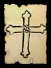
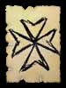

|
| |
Apesar de ter
sido difundida pelo cristianismo como símbolo do sofrimento de
Cristo à crucificação, a figura da cruz constitui um ícone de
caráter universal e de significados diversificados, amparados
por suas inúmeras variações.
É
possível detectar a presença da cruz, seja de forma
religiosa, mística ou esotérica, na história
de povos distintos (e distantes) como os egípcios, celtas,
persas, romanos, fenícios e índios americanos.
Seu modelo básico traz sempre a intersecção
de dois eixos opostos, um vertical e outro horizontal, que representam
lados diferentes como o Sol e a Lua, o masculino e o feminino
e a vida e a morte, por exemplo.
É a união dessas forças antagônicas
que exprime um dos principais significado da cruz, que é
o do choque de universos diferentes e seu crescimento a partir
de então, traduzindo-a como um símbolo de expansão.
De acordo com o estudioso Juan Eduardo Cirlot,
ao situar-se no centro místico do cosmos, a cruz assume
o papel de ponte através da qual a alma pode chegar a Deus.
Dessa maneira, ela liga o mundo celestial ao terreno através
da experiência da crucificação, onde as vivencias
opostas encontram um ponto de intersecção e atingem
a iluminação.
|
|
Cruz
simples: Em sua forma básica a
cruz é o símbolo perfeito da união
dos opostos, mantendo seus quatro "braços"
com proporções iguais. Alguns estudiosos
denominam esta como Cruz Grega.
|
|
Cruz de Santo
André: Símbolo da humildade
e do sofrimento, recebe esse nome por causa de Santo André,
que implorou a seus algozes para não ser crucificado
como seu Senhor por considerar-se indigno. Acredita-se
que o santo foi martirizado em uma cruz com essa forma.
|
|
Cruz de Santo
Antonio (Tau): Recebeu esse nome por reproduzir
a letra grega Tau. É considerada por muitos, como
a cruz da profecia e do Antigo Testamento. Dentre suas
muitas representações estão o martelo
de duas cabeças, como sinal daquele que faz cumprir
a lei divina, encontrado na cultura egípcia, e
a representação da haste utilizada por Moisés
para levantar a serpente no deserto.
|
|
Cruz Cristã:
Definitivamente o mais conhecido símbolo cristão,
que também recebe o nome de Cruz Latina. Os romanos
a utilizavam para executar criminosos. Por conta disso,
ela nos remete ao sacrifício que Jesus Cristo ofereceu
pelos pecados das pessoas. Além da crucificação,
ela representa a ressurreição e a vida eterna.
|
|
Cruz de Anu:
Utilizada tanto por assírios como
caldeus para representar seu deus Anu, esse símbolo
sugere a irradiação da divindade em todas
as direções do espaço.
|
|
Cruz Ansata:
Um dos mais importantes símbolos da cultura egípcia.
A Cruz Ansata consistia em um hieróglifo representando
a regeneração e a vida eterna. A idéia
expressa em sua simbologia é a do círculo
da vida sobre a superfície da matéria inerte.
Existe também a interpretação que
faz uma analogia de seu formato ao homem, onde o círculo
representa sua cabeça, o eixo horizontal os braços
e o vertical o resto do corpo.
|
|
Cruz Gamada
(Suástica): A suástica representa
a energia do cosmo em movimento, o que lhe confere dois
sentidos distintos: o destrógiro, onde seus "braços"
movem-se para a direita e representam o movimento evolutivo
do universo, e o sinistrógiro, onde ao mover-se
para a esquerda nos remete a uma dinâmica involutiva.
No século passado, essa cruz adquiriu má
reputação ao ser associada ao movimento
político-ideológico do nazismo.
|
|
Cruz Patriarcal:
Também conhecida como Cruz de Lorena e Cruz de
Caravaca possui um "braço" menor que
representa a inscrição colocada pelos romanos
na cruz de Jesus. Foi muito utilizada por bispos e príncipes
da igreja cristã antiga e por jesuítas nas
missões no sul do Brasil.
|
|
Cruz de Jerusalém:
Formada por um conjunto de cruzes, possui uma cruz principal
ao centro, representando a lei do Antigo Testamento, e
quatro menores dispostas em cantos distintos, representando
o cumprimento desta lei no evangelho de Cristo. Tal cruz
foi adotada pelos cruzados graças a Godofredo de
Bulhão, primeiro rei cristão a pisar em
Jerusalém, representando a expansão do evangelho
pelos quatro cantos da terra.
|
|
Cruz da Páscoa:
Chamada por alguns de Cruz Eslava, possui
um "braço" superior representando a inscrição
INRI, colocada durante a crucificação de
Cristo, e outro inferior e inclinado, que traz um significado
dúbio, dos quais se destaca a crença de
que um terremoto ocorrido durante a crucificação
causou sua inclinação.
|
|
Cruz do Calvário:
Firmada sobre três degraus que representam a subida
de Jesus ao calvário, essa cruz exalta a fé,
a esperança e o amor em sua simbologia.
|
 |
Cruz Rosa-Cruz:
Os membros da Rosa Cruz costumam explicar seu significado
interpretando-a como o corpo de um homem, que com os braços
abertos saúda o Sol e com a rosa em seu peito permite
que a luz ajude seu espírito a desenvolver-se e
florescer. Quando colocada no centro da cruz a rosa representa
um ponto de unidade.
|
 |
Cruz de Malta:
Emblema dos Cavaleiros de São João, que
foram levados pelos turcos para a ilha de Malta. A força
de seu significado vem de suas oito pontas, que expressam
as forças centrípetas do espírito
e a regeneração. Até hoje a Cruz
de Malta é muito utilizada em condecorações
militares.
|
Por
Guss de Lucca
Fonte: "Dictionary
of Symbols", J.E. Cirlot - Madrid - 1962

|
|
|
 |
|